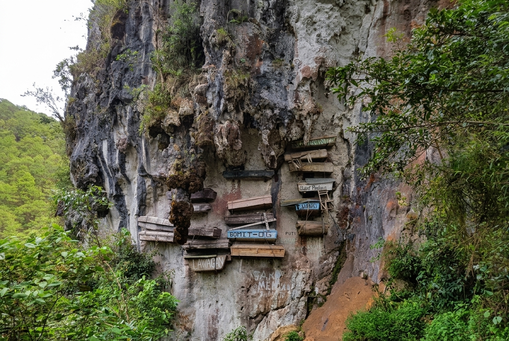
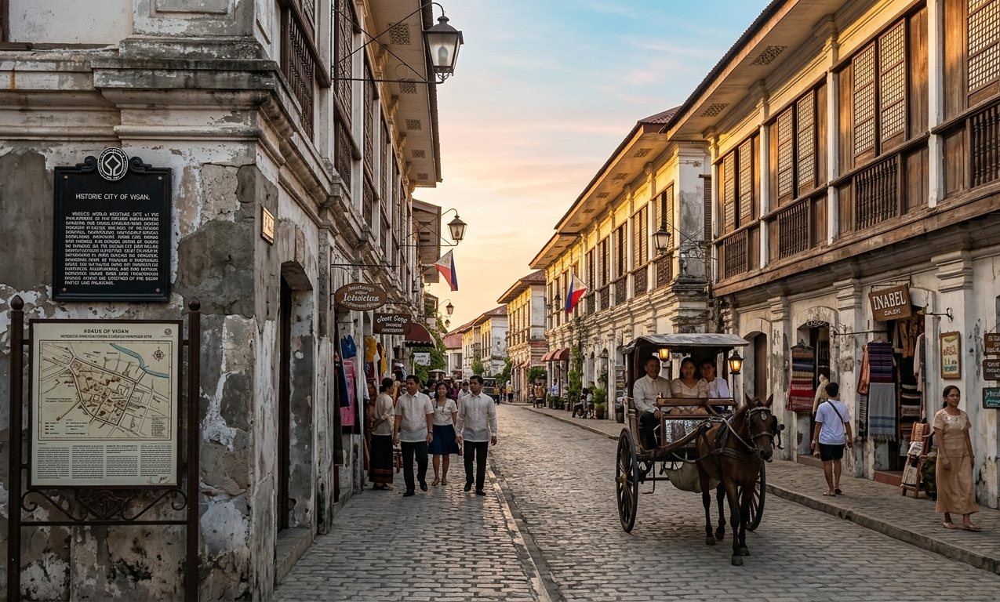
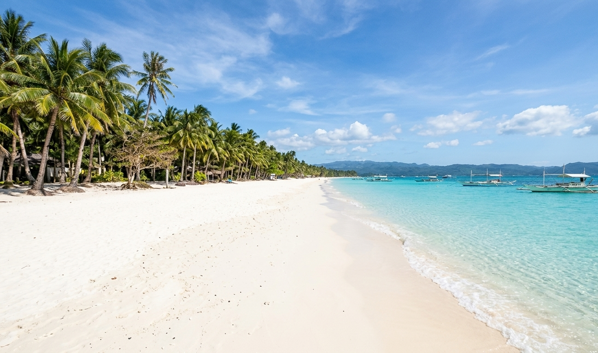
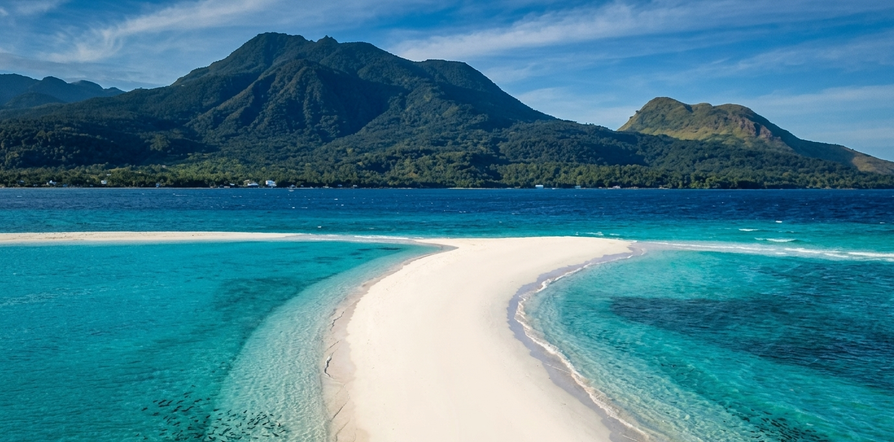

Destinations
Places to Explore
From UNESCO World Heritage sites to remote highland wildernesses — the Philippines holds some of the most extraordinary natural destinations on Earth.
Destinations
From UNESCO World Heritage sites to remote highland wildernesses — the Philippines holds some of the most extraordinary natural destinations on Earth.
Stretching 450 kilometres from Mindoro to Borneo, Palawan is the Philippines' most biodiverse island. Its forests contain some of the last intact lowland dipterocarp stands in Southeast Asia. The Puerto Princesa Subterranean River — the world's longest navigable underground river — runs 8.2 kilometres beneath the limestone karst before emptying into the South China Sea. Above ground, the island shelters the Irrawaddy Dolphin, Philippine Cockatoo, and Palawan Peacock-Pheasant.

A remote atoll rising from the depths of the Sulu Sea — accessible only by liveaboard for three months a year. Tubbataha holds 360 coral species, 600 fish species, and nesting populations of sharks and sea turtles on atolls untouched by daily human contact. Its fish biomass rivals the most pristine mid-Pacific reefs, and its waters shelter the Scalloped Hammerhead, one of the ocean's most threatened sharks.

Carved into the Cordillera mountains by the Ifugao people over 2,000 years ago using only hand tools, the Banaue terraces are one of the world's great feats of human engineering. A living cultural landscape where ancient irrigation systems still water active rice fields — maintained by a community whose relationship with the mountain has never been broken. The Ifugao Hudhud chants, sung during harvest, are themselves a UNESCO Intangible Heritage.
39 Destinations
Extraordinary places across the archipelago — from UNESCO World Heritage sites to volcanic islands, coral sanctuaries, and highland wilderness.
◆ Best season — optimal window for weather, wildlife activity & sea conditions. Philippine dry season (amihan) runs November–May; typhoon season (habagat) runs June–October. Year-round destinations remain accessible in all seasons.
⚠ Under Threat
A remote atoll in the Sulu Sea accessible only by liveaboard. 360 coral species, 600 fish species, nesting sharks and sea turtles. One of the most pristine marine ecosystems on Earth.
Carved into the Cordillera mountains by the Ifugao people over 2,000 years ago. A living cultural landscape where ancient farming techniques have shaped an extraordinary mountain environment.

A UNESCO World Heritage Site inscribed in 2014 for its extraordinary range of ecosystems — from lowland dipterocarp forest to a rare pygmy forest at its 1,637m summit. Shelters 341 plant species, 177 animals, and carnivorous pitcher plants endemic to its peaks, including the critically endangered Philippine Eagle.
⚠ Under Threat
The longest mountain range in the Philippines and the country's last great forest frontier. Shelters the Philippine Crocodile, Philippine Eagle, and thousands of endemic species in one of Asia's largest remaining rainforest blocks.

The Philippines' highest peak at 2,954m — home of the Philippine Eagle. Ancient rainforests, hot springs, and geothermal activity make Apo one of the country's most dramatic natural destinations.

The world's most perfect volcanic cone towers over the Bicol region. The surrounding Mayon Biosphere Reserve shelters lowland forests rich in endemic species — and the volcano itself is in constant, beautiful activity.
 ⚠ Under Threat
⚠ Under Threat
One of Southeast Asia's largest freshwater swamp forests — a mosaic of lakes, floating islands, and floodplain forest. Home to the Philippine Crocodile, Estuarine Crocodile, and rare waterbirds.

The northernmost Philippine islands — rugged, windswept, and unlike anywhere else in the archipelago. Rolling hills, stone villages, and dramatic cliff coastlines shaped by the full fury of Pacific typhoons.
 ⚠ Under Threat
⚠ Under Threat
Over 1,700 conical limestone mounds turn chocolate-brown in the dry season. A Philippine National Geological Monument and one of the most recognisable landscapes in Southeast Asia.

The Puerto Princesa Subterranean River navigates 8.2km beneath Palawan's limestone karst before emptying into the sea. One of the world's longest navigable underground rivers and a UNESCO World Heritage Site.

Luzon's highest peak at 2,922m — known for its "sea of clouds" and rare dwarf bamboo grasslands. A sacred mountain to the indigenous Ibaloi and Kalanguya peoples of the Cordillera.
Known as White Peak for its pale rocky summit rising above the montane forests of Mindanao. A highland trekking destination offering sweeping views across the surrounding ranges, with mossy forest trails sheltering endemic orchids, pitcher plants, and mountain birds.
 ⚠ Under Threat
⚠ Under Threat
One of the world's most unique volcanic systems — an active island volcano rising from a crater lake, itself enclosed within one of the largest calderas in Southeast Asia. Home to the endemic Tawilis sardine and a dramatic landscape sculpted by centuries of eruptions.

The site of the 20th century's second-largest volcanic eruption now harbours a stunning turquoise crater lake ringed by lahar-sculpted badlands. The surrounding Aeta communities have lived in relationship with the volcano for thousands of years.

In 1871, a series of volcanic eruptions on Camiguin Island caused the ground to sink — taking the local cemetery with it into the sea. A large white cross now marks the spot above the waterline, surrounded by the open ocean. Below, coral has colonised the grave markers. The dead and the reef have become one.

Nestled in the Cordillera highlands, Sagada is surrounded by pine forests, limestone caves, and dramatic cliffs where ancient hanging coffins bear witness to the Igorot's ancestral burial tradition. Echo Valley and Sumaguing Cave draw explorers from around the world.

The best-preserved Spanish colonial city in Asia — its Mestizo District of cobblestone streets and ancestral mansions is a UNESCO World Heritage Site. The surrounding Ilocos coast is a landscape of red sand beaches, tobacco farms, and centuries of maritime history.

A slender island of powdered coral beaches, clear turquoise shallows, and dramatic kite-surfing winds off Bulabog Beach. Boracay's White Beach stretches 4 kilometres and is consistently ranked among the world's finest. The surrounding waters hold extensive seagrass beds — habitat for dugong and sea turtles.

Called the "Island Born of Fire," Camiguin holds seven volcanoes on an island smaller than many cities. Its waters shelter the Camiguin Flying Fox (Critically Endangered), its cold springs and reefs are among the clearest in the Visayan Sea, and Mount Hibok-Hibok looms active above it all.
 ⚠ Under Threat
⚠ Under Threat
A tiny volcanic island surrounded by one of Southeast Asia's most celebrated community-managed marine sanctuaries. Green sea turtles gather here year-round, reef fish biomass rivals pristine mid-Pacific reefs, and the surrounding wall dives are among the most dramatic in the Philippines.
The Philippines' surfing capital — a teardrop-shaped island fringed by mangroves, lagoons, and world-class reef breaks. Beyond Cloud 9, Siargao shelters the Sohoton Cove, whose crystal caves flood at high tide, and the Magpupungko rock pools that only appear at low water.
A maze of ancient limestone cliffs, hidden lagoons, and white sand beaches at the northern tip of Palawan. The El Nido–Taytay Managed Resource Protected Area covers over 900 km² of some of the most biodiverse marine habitat in the Coral Triangle.
Coron is dominated by jagged limestone peaks rising from turquoise waters. Kayangan Lake — fed by underground springs and rated among Asia's cleanest lakes — sits inside a karst crater accessible only by a steep forest trail. Below the bay, WWII wreck dives reveal coral-encrusted history.
A highland lake ringed by hills and T'boli communities in South Cotabato. The surrounding forests shelter endemic birds, the lake itself is home to rare freshwater species, and the Seven Falls cascade through one of the most culturally rich landscapes in Mindanao.

The whale shark capital of the world — a small fishing town where butanding (whale sharks) gather in extraordinary numbers from November to June, feeding on plankton in the warm Ticao Pass. Interaction is strictly regulated: no touching, no flash, snorkel only — a global model for sustainable wildlife tourism.
The world's second-largest contiguous coral reef system and the Philippines' largest coral reef — a remote atoll rising from the Sulu Sea between Mindoro and Palawan. Its outer walls plunge hundreds of metres into the deep, drawing hammerhead sharks, thresher sharks, and massive schools of barracuda.
A seven-chambered limestone cave on the banks of the Pinacanauan River in Cagayan — where sunlight streams through a natural skylight to illuminate a chapel inside the cave. Its deeper passages yielded bones of Homo luzonensis, rewriting the timeline of human presence in Southeast Asia.
A tiny coral island off the southwestern tip of Bohol, encircled by a wall reef that drops vertically into deep water. Green and hawksbill sea turtles rest on the reef plateau year-round, spinner dolphins ride the currents offshore, and the no-take sanctuary zone has allowed the reef to recover to near-pristine condition.
A Ramsar-listed wetland and one of the most important migratory bird stopovers in Southeast Asia. Every year tens of thousands of shorebirds — including globally threatened species like the Chinese Egret and Far Eastern Curlew — rest and refuel on Olango's tidal flats before continuing south to Australia.
A hidden tidal cove in Northern Samar reachable only at low tide through a narrow limestone passage. Inside, the brackish water teems with millions of stingless jellyfish, cathedral-ceilinged caves glow with bioluminescent organisms, and the forest canopy above shelters rare hornbills and flying foxes.
An active stratovolcano and the highest peak in the Visayas, its montane forests sheltering critically endangered Visayan birds found nowhere else — including the Visayan Flowerpecker and Writhed Hornbill. The national park is one of the last intact forest sanctuaries on the heavily deforested island of Negros.
A short but impossibly deep river in Surigao del Sur — its water an otherworldly cobalt blue fed by underwater springs connecting to the open sea. Saltwater fish from the ocean swim freely upriver, surrounding swimmers. At noon each day, all visitors are asked to leave the water for the "Fish Feeding" — and thousands of fish surface at once.
The Philippines' second-largest lake and one of Southeast Asia's most ancient — a vast freshwater body in the Mindanao highlands sacred to the Maranao people. Its isolation produced one of the world's most remarkable freshwater fish radiations, with endemic species now critically threatened by introduced competitors and habitat change.
Eighty-four cascading tiers plunge 340 metres through old-growth rainforest in Davao Oriental — one of the tallest multi-tiered waterfalls in Southeast Asia. The surrounding Pujada Bay Protected Landscape is a frontier wilderness of intact lowland dipterocarp forest, undisturbed coral reefs, and undescribed endemic species.
One of the Philippines' most pristine crater lakes, nestled inside the summit caldera of Mount Parker in South Cotabato. Reached by a two-day trek through mossy montane forest, Holon's emerald waters are surrounded by endemic pitcher plants, wild orchids, and the rich T'boli cultural landscape of the highlands.

The primary conservation breeding facility for the Philippine Eagle — the country's national bird and one of the world's most endangered raptors. Home to rescued and captive-bred eagles in large naturalistic enclosures, the center leads research into eagle ecology and runs education programs reaching thousands of students annually.
 ⚠ Under Threat
⚠ Under Threat
The last stronghold of the Tamaraw — the critically endangered dwarf buffalo found only on Mindoro. Its montane grasslands and forest mosaic shelter fewer than 500 remaining individuals of one of the world's rarest large mammals, alongside the Mindoro Bleeding-heart Dove and endemic forest birds.
The largest intact lowland rainforest in the Visayas — a vast karst and forest wilderness sheltering the Philippine Cockatoo, Samar Cobra, and rare cave-dwelling species in one of the most geologically complex island interiors in the archipelago. Its limestone cave systems rival those of Palawan in scale.
An extraordinary island sanctuary in northern Palawan where African savanna animals — giraffes, zebras, and impalas — share habitat with endemic Philippine species including the Calamian Deer, Palawan Bearcats, and Philippine Cockatoos. A surreal and ecologically unique conservation experiment with a complex human history.
Explore 39 destinations — filter by island group or click any card to learn more. ◆ View all 243 Protected Areas →